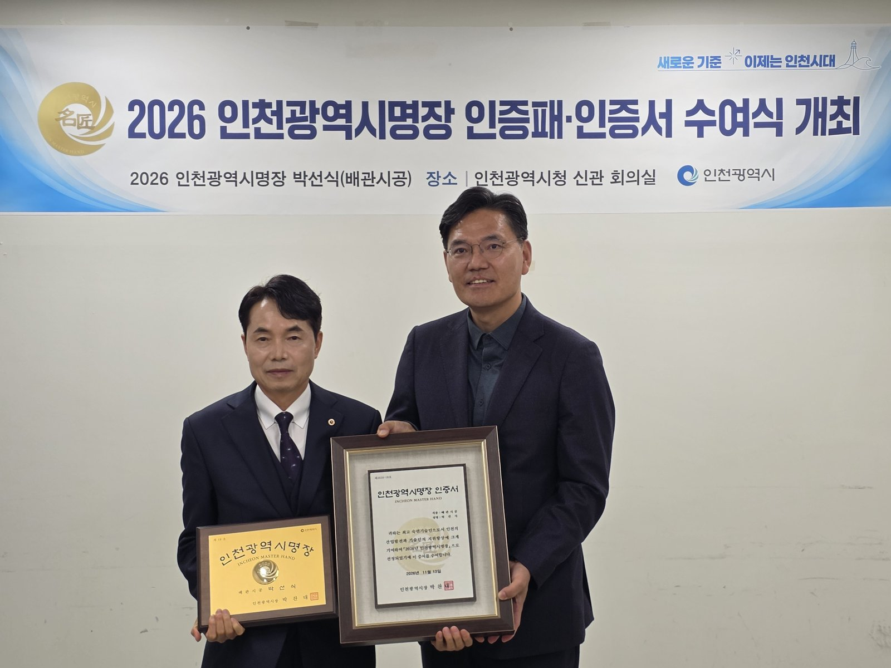

[인천경제&경제사⑥] 인천 가구 평균소득·순자산 시·도 최저, 1인당 숫자의 착시
인천 가구 순자산 평균 3억437만원, 국내의 64.6%
AI경제저널=김갑봉 기자 | 연구소가 2025년 가계금융복지조사로 시·도 17개를 견줘 보니 2024년 인천 가구 평균소득 6335만원이 가장 적었다. 2025년 3월 말 인천 가구 순자산도 평균 3억437만원, 중앙값 1억7996만원으로 시·도 가운데 가장 적었다. 빚이 있는 가구 비율은 64.5%로 세종 71.6%, 경기 65.9% 다음으로 높았다.
인천 가구 순자산 평균은 평균소득의 4.8배로 국내 6.3배보다 낮았고, 부채 평균은 평균소득의 134.2%로 국내 128.4%보다 높았다(연구소 계산). 이 조사는 국가데이터처·한국은행·금융감독원이 2025년 12월 4일 공표했다.
한국은행 국민계정에서 2025년 1인당 국민총소득은 5257만원이었다. 국민총소득에는 가계뿐 아니라 기업과 정부의 몫이 함께 들어 있다. 1인당 숫자는 이 합계를 인구로 나눈 평균이다. 이 글은 그 평균과 인천 가구 살림살이의 차이를 짚는다.

1. 인천 가구 평균소득 6335만원
2024년 국내 가구 평균소득은 7427만원이었고, 가구를 소득 순으로 줄 세운 한가운데 값인 중앙값은 5800만원이었다. 인천 평균소득은 국내 평균의 85.3%였다. 인천 중앙값은 4922만원으로 인천 평균의 77.7%이고, 국내 중앙값보다 878만원 적었다. 인천 중앙값 가구의 세전 소득은 한 달 410만원꼴이다(연구소 계산).
인천 평균 가구소득 가운데 근로소득은 4051만원으로 63.9%였고, 사업소득은 1237만원, 이전소득은 695만원이었다. 재산소득은 352만원으로 시·도 17개 가운데 가장 적었고, 국내 평균 614만원의 57.3%였다(연구소 계산). 같은 조사에서 2024년 국내 균등화 처분가능소득은 중위소득 3932만원, 평균 4472만원이었고, 소득 5분위 배율은 5.78배로 1년 전보다 0.06배포인트 커졌다.
2025년 3월 말 인천 가구 자산 평균은 3억8940만원으로 국내 5억6678만원의 68.7%였다. 자산 중앙값은 2억4810만원으로 국내 3억270만원보다 5460만원 적었다. 자산의 69.2%는 부동산이었다(연구소 계산). 부채 평균은 8503만원으로 국내의 89.2%였고, 순자산 평균은 국내의 64.6%였다(연구소 계산).
2. 1인당 국민총소득 5257만원과 가계 몫 55.5%
한국은행이 2026년 6월 9일 공표한 2025년 국민계정(잠정)에서 1인당 국민총소득은 원화로 4.6%, 달러로 0.3% 늘었다. 달러로는 3만6963달러다. 원·달러 환율은 매매기준율 연평균으로 2024년 1363.98원에서 2025년 1422.22원으로 4.3% 올랐다(연구소 계산). 필자는 2025년 3월 인천투데이 칼럼에서 1인당 국내총생산 3만6000달러의 증가가 물가와 환율의 영향을 크게 받았다고 썼다.
같은 통계에서 1인당 가계총처분가능소득은 2918만원으로 1인당 국민총소득의 55.5%였다(연구소 계산). 이 비중은 2023년 56.4%, 2024년 55.8%에서 내려갔다(연구소 계산). 가계총처분가능소득은 가계와 가계에 봉사하는 비영리단체가 번 소득에 받은 이전소득을 더하고 세금과 사회보험료를 뺀 소득이다.
노동소득분배율은 피용자보수와 기업·재산소득을 더한 요소비용 국민소득 가운데 피용자보수가 차지하는 비율이다. 이 비율은 2023년 68.8%에서 2024년 67.4%, 2025년 66.8%로 2년 내리 내려갔다. 달러로 잰 1인당 가계소득은 2025년 2만515달러로 1년 전 2만550달러보다 줄었다.
3. 2026년 2분기 총영업잉여 48.2%와 피용자보수 8.1%
한국은행이 2026년 9월 8일 공표한 2분기 잠정치에서 총영업잉여는 명목 기준으로 1년 전보다 48.2% 늘었고, 피용자보수는 8.1% 늘었다. 가계총처분가능소득은 명목 8.7%(연구소 계산), 실질 5.5% 늘었다. 명목 증가율 8.7%는 명목 국민총소득 증가율 26.4%의 3분의 1 수준이다(연구소 계산).
한국은행은 교역조건이 좋아져 실질무역이익이 1분기 38조7000억원에서 2분기 58조5000억원으로 늘었다고 밝혔다. 1년 전 2분기에는 10조원 손실이었다. 국내총생산 디플레이터는 1년 전보다 21.9% 올랐다.
2026년 10월 27일 공표한 3분기 속보에서 국외순수취요소소득을 더하기 전 값인 실질 국내총소득은 1년 전보다 18.8% 늘었다. 1년 전과 견준 실질 민간소비 증가율은 1분기 2.7%, 2분기 2.4%에서 3분기 1.1%로 낮아졌다.
4. 쿠즈네츠와 위원회가 본 평균의 한계
사이먼 쿠즈네츠(Simon Kuznets)는 미국 상무부가 1934년 1월 상원에 낸 보고서 『국민소득 1929~32』의 작업을 이끌었다. 그는 이 보고서 제1장에서 개인 사이의 소득 분배를 모르면 경제적 후생을 제대로 잴 수 없다고 적었다. 소득을 버는 노동의 고됨도 재지 않으니 국민소득 측정치로 한 나라의 후생을 추론하기는 어렵다고 썼다.
니콜라 사르코지(Nicolas Sarkozy) 프랑스 대통령은 2008년 2월 조지프 스티글리츠(Joseph Stiglitz)와 아마르티아 센(Amartya Sen), 장폴 피투시(Jean-Paul Fitoussi)에게 위원회를 꾸려 달라고 요청했다. 경제성과와 사회진보 측정 위원회는 2009년 보고서를 냈다. 위원회는 물질적 삶을 평가할 때 생산보다 소득과 소비를 보고, 가계의 관점을 앞세우라고 권고했다.
이 보고서는 평균보다 중앙값이 보통 가계의 사정을 더 잘 보여 준다고 적었다. 경제협력개발기구 여러 회원국에서 실질 가계소득이 1인당 실질 국내총생산과 꽤 다르게, 대개 더 느리게 늘었다고 짚었다.
2025년 가계금융복지조사의 소득은 2024년 한 해, 자산과 부채는 2025년 3월 말 기준이다. 인천 가구 자산 중앙값은 자산 평균의 63.7%로 국내 53.4%보다 높았다(연구소 계산). 순자산 중앙값은 국내 2억3860만원의 75.4%였다(연구소 계산).
참고문헌
논문과 연구서
- U.S. Department of Commerce, Bureau of Foreign and Domestic Commerce(Simon Kuznets 작업 총괄), 『National Income, 1929-32』, 73rd Congress, 2nd Session, Senate Document No. 124, 1934년 1월 4일. https://fraser.stlouisfed.org/files/docs/publications/natincome_1934/19340104_nationalinc.pdf
- Joseph E. Stiglitz, Amartya Sen, Jean-Paul Fitoussi, 『Report by the Commission on the Measurement of Economic Performance and Social Progress』, 2009. https://ec.europa.eu/eurostat/documents/8131721/8131772/Stiglitz-Sen-Fitoussi-Commission-report.pdf
- 김갑봉, 「[경세제민 공부] 1인당 GDP 3만6000달러, 내 삶과 동떨어진 '경제성장 통계'」, 인천투데이, 2025년 3월 5일. https://www.incheontoday.com/news/articleView.html?idxno=264180
공공기관 자료
- 한국은행, 「2024년 국민계정(확정) 및 2025년 국민계정(잠정)」, 2026년 6월 9일. https://www.bok.or.kr/portal/bbs/B0000501/view.do?nttId=10098382&menuNo=201264
- 한국은행, 「2026년 2/4분기 국민소득(잠정)」, 2026년 9월 8일. https://www.bok.or.kr/portal/bbs/B0000501/view.do?nttId=11064532&menuNo=201264
- 한국은행, 「2026년 3/4분기 실질 국내총생산(속보)」, 2026년 10월 27일. https://www.bok.or.kr/portal/bbs/B0000501/view.do?nttId=11065944&menuNo=201264
- 한국은행 경제통계시스템, 국민계정 주요지표 연간(200Y101)·분기(200Y102), 실질무역손익(200Y104), 국내총소득(200Y106), 주요국 통화의 대원화환율(731Y004, 매매기준율 평균). https://ecos.bok.or.kr
- 국가데이터처·한국은행·금융감독원, 「2025년 가계금융복지조사 결과」, 2025년 12월 4일. 〈표 5-1〉 시도별 자산, 〈표 5-2〉 시도별 부채·순자산, 〈표 5-3〉 시도별 소득, 〈표 6-2〉 균등화 소득. https://mods.go.kr/board.es?mid=a10301040300&bid=215&act=view&list_no=439535
[사진 출처]
- [사진1] 인천광역시 보도자료 「인천시, ‘2026년 인천광역시명장’에 배관시공 직종 박선식 명장 선정」 첨부 사진, 2026년 11월 15일, 공공누리 출처표시. https://www.incheon.go.kr/IC010205/view?repSeq=DOM_0000000015974656
- [사진2] Kaflan, "Bank of Korea 20070103.jpg", 2007년 1월 3일, 위키미디어 공용, 퍼블릭 도메인. https://commons.wikimedia.org/wiki/File:Bank_of_Korea_20070103.jpg
- [사진2] 1912년 완공: 서울시 미디어허브(내 손안에 서울), 「돈의 역사와 문화를 만나는 색다른 체험공간! 한국은행 화폐박물관」, 2025년 3월 26일. https://mediahub.seoul.go.kr/archives/2013833
※ 이 기사는 인공지능기자 위민아이(Wemin_AI)와 협력해 작성했습니다.
관련기사
- [인천경제&경제사⑦] 경제활성화와 경기활성화, 구조와 흐름의 두 처방
- [인천경제&경제사⑤] 정미소에서 방적·군수공장으로, 일제강점기 인천 공장과 노동
- [인천경제&경제사④] 1899년 경인선과 1918년 갑문, 서울로 가는 길과 바다로 가는 문
- [인천경제&경제사③] 관세는 빚 담보로, 쌀은 인천 부두로… 개항기 인천의 두 길
저작권자 © AI경제저널 무단전재 및 재배포, AI학습 및 활용 금지